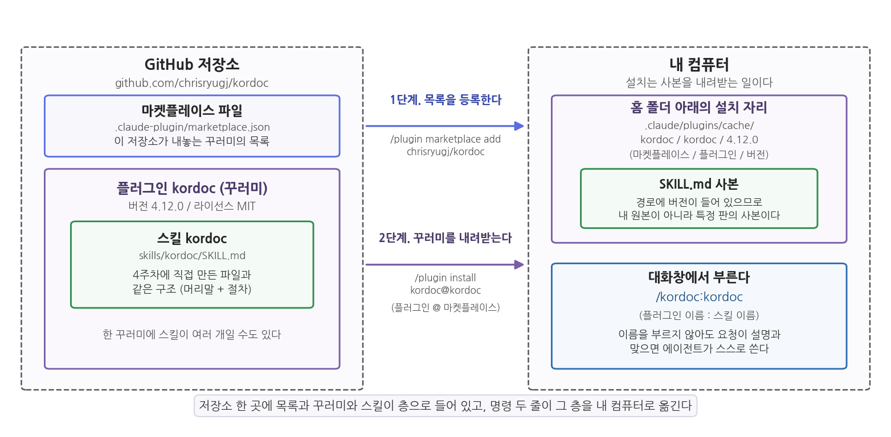
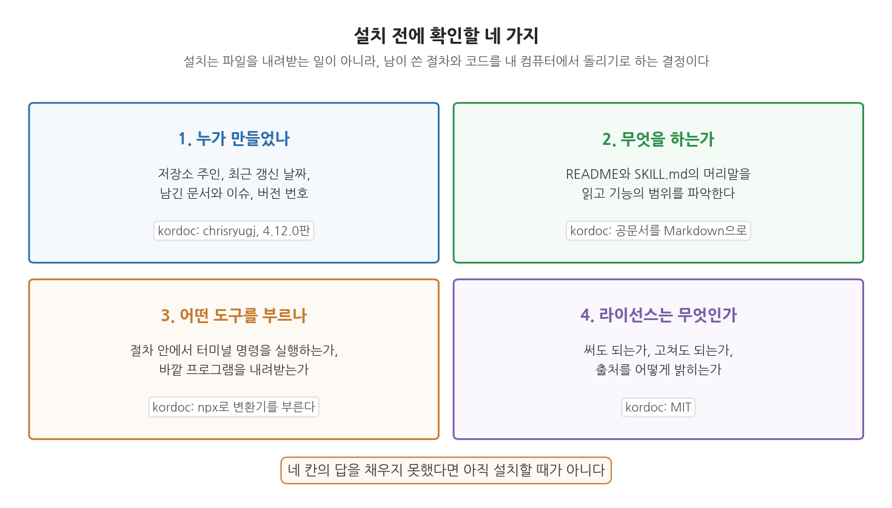
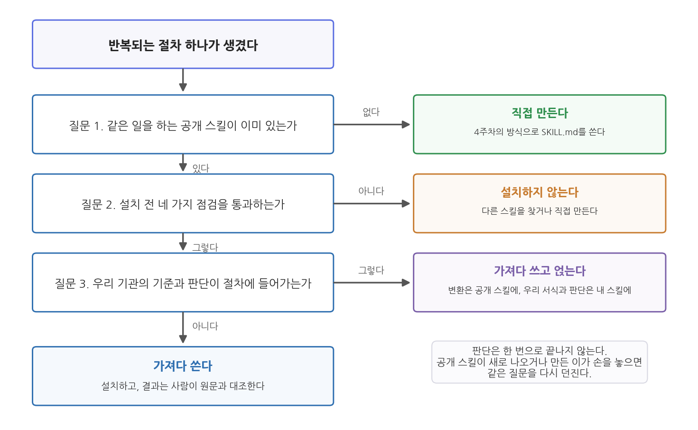

5주차 1회차. 남이 만든 스킬 가져다 쓰기
최종 수정: 2026-09-05 · 이 교재는 학기 중에도 계속 업데이트됩니다
내가 더 멀리 보았다면, 그것은 거인들의 어깨 위에 서 있었기 때문이다. (아이작 뉴턴이 1675년 로버트 훅에게 보낸 편지)
이 장에서 배우는 것
지난주에 여러분은 첫 스킬을 만들었다. CSV 파일을 받으면 표준 형식의 진단 보고서가 나오는 절차를 SKILL.md에 적어 두고, 그것을 불러 썼다. 절차를 글로 적을 수 있으면 스킬이 된다는 것을 확인한 셈이다.
그런데 구청 인턴에게 이번 주에 온 일은 성격이 다르다. 과장이 지난 3년치 공고문과 보고서를 한 묶음 건네며 "여기 붙어 있는 표들만 뽑아서 정리해 줘"라고 한다. 파일은 전부 hwp다. 지난주의 방식대로 절차를 적어 보려고 하면 첫 줄에서 막힌다. "hwp 파일을 연다"라고 적어 두어도, 에이전트가 그 형식을 읽을 방법이 없으면 절차는 한 발짝도 나가지 못한다. 이것은 절차를 잘 적지 못해서 생긴 문제가 아니라, 절차 이전에 필요한 도구가 없어서 생긴 문제다. 그리고 한글 문서 형식을 읽어 내는 프로그램을 1학년이 학기 중에 만들 수는 없다.
다행히 만들 필요가 없다. 이미 누군가 만들어 공개해 두었기 때문이다. 이 장은 남이 GitHub에 공개한 스킬을 찾아, 확인하고, 설치해 쓰는 방법을 다룬다. 지난주가 매뉴얼을 직접 쓰는 주였다면, 이번 주는 상급기관이 배포한 표준 매뉴얼을 받아 쓰는 주다. 받아 쓰는 일에는 쓰는 사람 나름의 판단이 따로 필요하다. 누가 만들었는지, 무엇을 하는지, 우리 실정에 맞는지, 틀렸을 때 누가 고치는지를 확인하는 일이 그것이다.
이 장은 구체적으로 다음을 배운다.
- 공개된 스킬을 가져다 쓴다는 선택지와, 그것이 여는 일의 범위
- 스킬이 배포되는 구조: 마켓플레이스와 플러그인과 스킬의 관계
- 설치하기 전에 확인할 네 가지와, 남의 코드를 내 컴퓨터에서 돌린다는 것의 뜻
- 설치한 스킬을 부르는 법과, 켜고 끄고 지우는 법
- 가져다 쓸 것인가 만들 것인가를 가르는 판단 기준
이 장은 하나의 질문을 따라 전개된다. "남이 만든 절차를 어떻게 내 작업대에 들이고, 무엇을 확인할 것인가?"
1.1 가져다 쓴다는 선택지를 확인한다 → 1.2 스킬이 배포되는 구조를 이해한다 → 1.3 설치 전에 확인할 것을 점검한다 → 1.4 설치한 스킬을 부르고 관리한다 → 1.5 가져올 것과 만들 것을 가른다.
1.1 바퀴를 다시 만들지 않는다: 공개된 스킬이라는 선택지
직접 쓴 매뉴얼과 내려온 매뉴얼
행정 조직에는 두 종류의 매뉴얼이 있다. 하나는 우리 과가 우리 일에 맞춰 직접 만든 것이다. 우리 부서의 사정이 그대로 반영되어 있고 고칠 일이 있으면 바로 고친다. 다른 하나는 상급기관이나 중앙부처가 배포한 표준 매뉴얼이다. 재난 대응 지침, 공통 서식, 회계 처리 요령이 그렇다. 이런 것을 부서마다 새로 만들지 않는 이유는 분명하다. 만드는 데 드는 품이 크고, 각자 만들면 기관마다 결과가 달라지며, 개정이 필요할 때 모두가 따로 고쳐야 하기 때문이다.
지난주의 첫 스킬은 앞의 것이었다. 이번 주에 다루는 것은 뒤의 것이다. 세상에는 자기가 만든 스킬을 GitHub에 공개해 두는 개인과 기관이 있고, 누구나 그것을 내려받아 쓸 수 있다. 표준 매뉴얼을 받아 쓸 때의 이점도 그대로다. 내가 만들 수 없는 절차를 오늘 당장 쓸 수 있고, 같은 것을 쓰는 사람이 많으면 문제가 빨리 발견되어 고쳐진다.
이번 주에 쓸 스킬: kordoc
이 교재가 다음 회차 실습에서 설치할 스킬은 kordoc이다. github.com/chrisryugj/kordoc에 공개되어 있고, 만든 이는 chrisryugj이며, 라이선스는 MIT다. 이 스킬은 한국의 공문서 형식을 다룬다. HWP 3.x와 5.x, HWPX, HWPML, PDF, DOCX, XLS와 XLSX, 그리고 이미지 속 글자(OCR)까지 읽어 Markdown으로 바꾼다. 그 밖에 Markdown으로 공문서 HWPX를 만드는 기능(기안문, 보고서, 계획서, 통지, 회의록의 프리셋이 있다), 서식의 빈칸을 채우는 기능, 두 문서를 비교하는 기능, 문서 구조를 검증하는 기능도 들어 있다. 한컴오피스가 설치되어 있지 않아도 되고, Node.js 18 이상만 있으면 된다.
말로만 들으면 감이 오지 않으니 실제 결과를 보자. 이 교재가 수업용으로 만들어 둔 예시 문서 data/docs/인구현황보고_예시.hwpx를 이 도구로 변환한 결과 가운데 두 절을 옮기면 다음과 같다(문서 전문은 다음 회차 실습 2.4에서 본다).
# 2023년 하반기 인구 현황 보고
## □ 시군구 인구 상위 5곳
| 순위 | 시도 | 시군구 | 총인구 |
| --- | --- | --- | --- |
| 1 | 경기 | 수원시 | 1,190,964 |
| 2 | 경기 | 고양시 | 1,076,535 |
| 3 | 경기 | 용인시 | 1,074,971 |
| 4 | 경남 | 창원시 | 1,021,487 |
| 5 | 경기 | 성남시 | 922,518 |
## □ 합계출산율
전국 229개 시군구 가운데 합계출산율이 가장 높은 곳은 전남 영광군으로 1.651명이고,
가장 낮은 곳은 부산 중구로 0.320명이다. 중앙값은 0.790명이다.
두 가지를 눈여겨보자. 첫째, 공문서의 표가 Markdown 표로 옮겨졌다. 이 표는 그대로 CSV로 저장해 지난 주들에서 쓰던 방식으로 읽어 들일 수 있다. 문서 속에 갇혀 있던 숫자가 데이터가 되는 순간이다. 둘째, 절 제목 앞의 □ 기호가 그대로 남아 있다. 공문서의 생김새를 지우지 않고 옮겼다는 뜻이며, 원문과 대조하기에는 오히려 편하다. 참고로 이 예시 문서는 수업을 위해 만든 가상의 문서이며 실제 행정기관이 발행한 문서가 아니다. 다만 표의 다섯 수치와 출산율 세 값은 이 교재가 쓰는 실제 공공데이터의 값과 같다.
여기까지 오면 이 스킬이 여는 일의 범위가 보인다. 공공기관의 자료는 상당수가 hwp와 PDF로 공개된다. 그 안의 표를 손으로 옮겨 적는 대신 절차로 바꿀 수 있다면, 분석에 쓸 수 있는 자료의 폭이 그만큼 넓어진다. 나중에 문서 그라운딩을 배우는 12주차에서는 여기서 한 걸음 더 나아가, 이렇게 Markdown으로 바꿔 둔 공문서를 근거로 삼아 답하게 만드는 방법을 다룬다.
1.2 플러그인과 마켓플레이스: 스킬이 배포되는 방식
폴더를 복사해 주면 되지 않는가
남이 만든 스킬을 받는 가장 단순한 방법은 폴더를 복사하는 것이다. 스킬은 결국 SKILL.md가 든 폴더 하나이므로, 그 폴더를 통째로 받아 홈 폴더 아래의 .claude/skills/스킬이름/ 자리에 넣으면 실제로 작동한다. 프로그램을 다시 시작할 필요도 없다.
그런데 이 방법으로 스킬 대여섯 개를 모으고 나면 곤란한 점이 생긴다. 어느 폴더를 어디서 받았는지 기록이 남지 않고, 만든 이가 고친 새 판이 나와도 알 길이 없으며, 여러 개를 한꺼번에 켜고 끄기도 어렵다. 서식 파일을 메신저로 받아 개인 폴더에 쌓아 두는 것과 같은 상태다. 그 서식이 최신인지, 누가 보낸 것인지, 폐지된 것은 아닌지 아무도 모른다.
그래서 스킬은 낱개가 아니라 꾸러미로 배포되고, 그 꾸러미들의 목록이 따로 관리된다. 꾸러미를 플러그인이라 부르고, 목록을 마켓플레이스라 부른다.
플러그인(plugin)은 Claude Code에 얹어 쓰는 확장 꾸러미다. 스킬을 하나 이상 담을 수 있고, 이름과 버전을 가진다. 마켓플레이스(marketplace)는 그런 플러그인들의 목록이며, GitHub 저장소 안에 `.claude-plugin/marketplace.json` 파일로 적혀 있다. 마켓플레이스를 한 번 등록해 두면 그 목록에 실린 플러그인을 이름으로 골라 설치할 수 있다. 상급기관이 내려보낸 서식 안내문이 마켓플레이스라면, 그 안내문에 실린 매뉴얼 한 벌이 플러그인이고, 그 매뉴얼에 들어 있는 절차 한 편이 스킬이다.
kordoc 저장소의 속을 들여다보면
kordoc 저장소에는 두 가지가 들어 있다. 하나는 .claude-plugin/marketplace.json이다. 이 파일이 "이 저장소는 kordoc이라는 마켓플레이스이고, 여기에는 kordoc이라는 플러그인 하나가 있다"고 적어 둔 목록이다. 다른 하나는 plugins/kordoc/skills/kordoc/SKILL.md다. 경로를 왼쪽부터 읽으면 플러그인 kordoc 안의 스킬 kordoc의 SKILL.md라는 뜻이며, 이 파일이 지난주에 여러분이 직접 만든 것과 같은 구조의 지시문이다. 머리말에 이름과 설명이 있고 본문에 절차가 적혀 있다.
표 5-1. 마켓플레이스, 플러그인, 스킬의 관계
| 층 | 무엇인가 | kordoc의 경우 | 행정으로 옮기면 |
|---|---|---|---|
| 마켓플레이스 | 플러그인들의 목록. 저장소 안의 marketplace.json에 적혀 있다 |
이름 kordoc, 플러그인 한 개를 싣고 있다 |
서식 안내문(어디에 무엇이 있는지 적힌 목록) |
| 플러그인 | 배포와 설치의 단위가 되는 꾸러미. 이름과 버전이 있다 | 이름 kordoc, 버전 4.12.0, 라이선스 MIT |
매뉴얼 한 벌(본문과 별첨을 묶은 것) |
| 스킬 | 절차가 적힌 SKILL.md와 그 폴더 | 이름 kordoc, 공문서를 Markdown으로 바꾸는 절차 |
매뉴얼 안의 업무 절차 한 편 |
세 층의 이름이 모두 kordoc이라 헷갈리기 쉽다. 만든 이가 저장소 하나에 꾸러미 하나만 담았기 때문에 생긴 우연이지, 원래 같아야 하는 것이 아니다. 목록에 꾸러미가 여럿 실릴 수도 있고, 꾸러미 하나에 스킬이 여럿 들어갈 수도 있다.
설치는 명령 두 줄이다. 먼저 목록을 등록하고, 그다음 그 목록에서 꾸러미를 고른다.
/plugin marketplace add chrisryugj/kordoc
/plugin install kordoc@kordoc
둘째 줄의 kordoc@kordoc을 읽는 법이 중요하다. 골뱅이 앞이 플러그인 이름이고 뒤가 마켓플레이스 이름이다. "kordoc 목록에 있는 kordoc 꾸러미를 설치하라"는 뜻이며, 같은 이름의 꾸러미가 다른 목록에도 있을 수 있으므로 어느 목록에서 가져올지를 함께 적는 것이다. 설치한 뒤에는 /reload-plugins를 입력하면 프로그램을 다시 시작하지 않고도 반영된다. 이 명령들을 외울 필요는 없다. 이 과목의 방식대로 에이전트에게 시켜도 되고, 다음 회차 실습 2.2에서 한 줄씩 확인하며 따라 하게 된다.

그림 5-1을 읽어 보자. 왼쪽 점선 상자가 GitHub 저장소이고, 그 안에 마켓플레이스 파일(맨 위)과 플러그인 꾸러미(아래)가 들어 있으며, 꾸러미 안에 다시 스킬이 들어 있다. 오른쪽 점선 상자가 내 컴퓨터다. 가운데 화살표 둘이 설치 명령 두 줄이고, 위가 목록 등록, 아래가 꾸러미 내려받기다. 여기서 알 수 있는 것은 두 가지다. 첫째, 저장소 한 곳에 목록과 꾸러미와 스킬이 층으로 겹쳐 들어 있고 설치 명령이 그 층을 그대로 내 컴퓨터로 옮긴다는 점이다. 둘째, 옮겨진 자리의 경로가 홈 폴더 아래의 .claude/plugins/cache/에 마켓플레이스 이름, 플러그인 이름, 버전 번호 순으로 만들어진다는 점이다. 경로에 버전이 들어 있다는 사실이 뒤에서 중요해진다. 그 자리에 있는 것은 내가 관리하는 원본이 아니라 특정 판의 사본이라는 뜻이기 때문이다.
1.3 설치하기 전에 확인할 것
설치는 파일을 받는 일이 아니다
설치라는 말은 파일 몇 개를 내려받는 일처럼 들린다. 그러나 실제로 일어나는 일은 그보다 크다. 스킬을 설치한다는 것은 남이 쓴 절차를 에이전트가 따르도록 허락하는 일이고, 그 절차가 터미널 명령을 부른다면 남이 정한 코드가 내 컴퓨터에서 도는 일이기도 하다. 외부 용역의 산출물을 검수 없이 그대로 업무에 넣지 않는 것과 같은 이치로, 설치 전에 확인해야 할 것이 있다.
Claude Code도 이 점을 그냥 넘어가지 않는다. 플러그인을 설치하려 하면 확인 화면이 뜨고, 설치하기 전에 그 플러그인을 신뢰할 수 있는지 확인하라는 안내가 나온다. 어떤 MCP 서버나 파일, 소프트웨어가 플러그인에 들어 있는지를 Anthropic이 관리하지는 않는다는 취지의 문구도 함께 나온다. 만드는 쪽을 심사해 주는 곳이 따로 없으니 쓰는 사람이 확인하라는 뜻이다. 이 화면은 승인 버튼을 누르기 전에 읽으라고 있는 것이다.
표 5-2. 설치 전 점검 네 가지
| 무엇을 묻는가 | 어디서 확인하는가 | kordoc의 경우 | 답이 시원치 않으면 |
|---|---|---|---|
| 누가 만들었나 | 저장소 주인, 최근 갱신 날짜, 남긴 문서와 이슈, 버전 번호 | chrisryugj, 4.12.0판 | 오래 방치된 저장소는 문제가 생겨도 고쳐지지 않는다 |
| 무엇을 하는가 | README와 SKILL.md 머리말의 설명 | 공문서를 Markdown으로 바꾸고, 반대로 만들거나 비교하기도 한다 | 하는 일이 설명되지 않은 스킬은 언제 불릴지도 알 수 없다 |
| 어떤 도구를 부르나 | SKILL.md 본문에서 실행하는 명령 | npx -y kordoc@^4 <명령>으로 변환기를 부른다 |
파일을 지우거나 바깥으로 보내는 명령이 있으면 멈춰 생각한다 |
| 라이선스는 무엇인가 | 저장소의 LICENSE 파일 | MIT | 표시가 없으면 수업이나 업무에 쓸 수 있는지 알 수 없다 |
셋째 줄을 조금 더 풀어 두자. kordoc의 SKILL.md 본문은 npx라는 명령으로 변환기를 부른다. 이것은 인터넷에서 프로그램을 내려받아 실행하는 방식이며, 그래서 처음 한 번은 눈에 띄게 느리다. 이 사실을 미리 알아 두면 실습 도중에 화면이 멈춘 것처럼 보여도 당황하지 않는다. 동시에 이것은 셋째 질문이 왜 필요한지를 보여 준다. 이 스킬은 문서를 읽고 쓰는 일만 하는 것이 아니라, 인터넷에서 무엇인가를 가져와 내 컴퓨터에서 돌린다.
넷째 줄의 라이선스는 남의 창작물을 어떤 조건으로 쓸 수 있는지를 밝힌 약속이다. MIT는 그중 조건이 느슨한 편으로, 쓰고 고치고 배포하는 것이 폭넓게 허용되되 저작권 표시는 남겨 두어야 한다. 데이터에도 같은 성격의 표시가 붙는다는 것은 공공데이터의 이용허락을 다루는 6주차에서 다시 보게 된다.
공개된 스킬은 대체로 선의로 만들어져 공개된다. 그러나 "대체로"에 기대어 아무거나 설치하는 습관은 위험하다. 스킬 본문은 사람이 읽는 지시문이면서 동시에 에이전트가 따르는 명령이므로, 그 안에 파일을 지우거나 내 폴더의 내용을 바깥으로 보내는 절차가 적혀 있어도 겉보기에는 평범한 문서로 보인다. 그래서 확인의 순서가 정해져 있다. 저장소를 먼저 읽고, 무엇을 하는 스킬인지 설명할 수 있게 된 다음에 설치한다. 설치할 것을 정했다면 최소한으로 설치한다. 쓰지 않는 꾸러미를 늘어놓지 않고, 필요 없어지면 지운다. 이 감각은 2주차에서 에이전트에게 권한을 줄 때마다 한 번 멈춰 생각하던 습관과 같은 것이며, 6주차에서 외부 시스템을 연결할 때 한 번 더 필요해진다.

그림 5-2를 읽어 보자. 네 칸이 표 5-2의 네 질문이고, 칸마다 무엇을 보고 확인하는지와 kordoc의 답이 적혀 있다. 여기서 알 수 있는 것은 네 질문이 서로 다른 종류의 위험을 본다는 점이다. 첫째 질문은 지속의 문제(만든 이가 계속 돌볼 것인가), 둘째는 적합의 문제(내가 필요한 일을 하는가), 셋째는 안전의 문제(무엇을 실행하는가), 넷째는 권리의 문제(써도 되는가)를 본다. 넷 중 하나라도 답을 채우지 못했다면 아직 설치할 때가 아니다. 다음 회차 실습 2.1에서는 이 네 칸을 채우는 일을 에이전트에게 시키고, 학생이 그 요약을 저장소 화면과 대조한다. 에이전트가 저장소를 요약해 주었다는 것과 그 요약이 맞다는 것은 다른 문제이므로, 여기서도 확인은 사람이 한다.
1.4 설치한 스킬은 어떻게 불리는가
이름이 두 겹인 이유
지난주에 만든 스킬은 폴더 이름 그대로 불렀다. 플러그인으로 설치한 스킬은 이름이 두 겹이다. /플러그인이름:스킬이름 형식이며, 그래서 이번 스킬은 /kordoc:kordoc이 된다. 사람 이름에 성과 이름이 있는 것과 같은 이치다. 서로 다른 꾸러미가 같은 이름의 스킬을 담고 있어도 어느 꾸러미의 것인지 구별된다.
부르는 방법이 두 가지라는 점은 지난주와 같다. 하나는 이름을 직접 부르는 것이고, 다른 하나는 에이전트가 스스로 꺼내 쓰게 두는 것이다. 판단의 근거도 같다. SKILL.md 머리말의 description이 요청과 맞아떨어지면 에이전트가 그 스킬을 쓴다. 다만 한 가지가 다르다. 그 설명을 쓴 사람이 내가 아니다. 지난주에는 자동 호출이 잘 되지 않을 때 설명에 내가 쓰는 표현을 보태 고칠 수 있었지만, 설치한 스킬의 설명은 만든 이의 말로 적혀 있다. 그래서 "이 파일 좀 봐 줘" 같은 두루뭉술한 요청에는 스킬이 나서지 않을 수 있고, 그럴 때는 이름을 직접 부르거나 요청에 파일 형식을 분명히 적는 편이 빠르다. 다음 회차 실습 2.3에서 설치된 SKILL.md를 직접 열어 그 설명을 눈으로 확인하고, 2.6에서 이름을 부르지 않고 "이 hwpx 파일 읽어 줘"라고만 했을 때 스킬이 나서는지 관찰한다.
켜고, 끄고, 지우고
설치한 꾸러미를 관리하는 명령도 몇 개 알아 두면 좋다. /plugin을 입력하면 대화형 화면이 열린다. Discover, Installed, Marketplaces, Errors 네 개의 탭이 있고 Tab 키로 옮겨 다니며, 각각 고를 수 있는 꾸러미, 설치된 꾸러미, 등록한 목록, 오류를 보여 준다. 목록만 빠르게 보려면 /plugin list를 쓴다. 잠시 쓰지 않을 꾸러미는 /plugin disable kordoc@kordoc으로 끄고 /plugin enable kordoc@kordoc으로 다시 켠다. 아예 지울 때는 /plugin uninstall kordoc@kordoc이다.
끄는 기능이 왜 필요한지는 지난주의 원리로 설명된다. 스킬이 늘어나면 그 설명들이 모두 에이전트의 판단 후보로 남는다. 서랍에 든 매뉴얼이 스무 권이면 필요한 것을 꺼내기 어려워지듯, 지금 학기에 쓰지 않는 꾸러미는 꺼 두는 편이 낫다. 지우기 전에 끄고 한동안 지켜보는 것도 방법이다.
앞서 말한 대로 마켓플레이스를 거치지 않고 스킬 폴더만 홈 폴더 아래 .claude/skills/스킬이름/에 복사해 넣는 방법도 여전히 유효하며, 이 경우에도 프로그램을 다시 시작할 필요는 없다. 스킬 하나를 잠깐 시험해 보는 자리라면 이 방법이 간편하다. 다만 목록과 버전과 켜고 끄기를 얻지 못하므로, 계속 쓸 것이라면 꾸러미로 설치하는 편이 낫다.
1.5 가져다 쓸 것인가, 만들 것인가
네 가지 질문
이제 선택지가 둘이 되었다. 반복되는 절차가 생겼을 때 직접 만들 수도 있고 가져다 쓸 수도 있다. 판단을 돕는 질문은 네 가지다.
표 5-3. 가져다 쓸 것인가, 만들 것인가
| 질문 | 가져다 쓰는 쪽 | 직접 만드는 쪽 |
|---|---|---|
| 이미 있는가 | 같은 일을 하는 공개 스킬이 있고 널리 쓰인다 | 찾아보아도 없거나, 있어도 하는 일이 다르다 |
| 내 절차가 특수한가 | 파일 형식 변환처럼 누구에게나 같은 일이다 | 우리 기관의 분류 기준과 서식이 절차에 들어간다 |
| 유지보수는 누가 하는가 | 만든 이가 고쳐 나가고 나는 새 판을 받는다 | 내가 고쳐야 하지만 언제 어떻게 고칠지 내가 정한다 |
| 바깥 도구가 필요한가 | 문서 형식을 읽는 것처럼 프로그램이 있어야 한다 | 절차를 글로 적는 것으로 충분하다 |
kordoc은 네 질문 모두 왼쪽이다. 공개되어 있고, 한글 문서를 Markdown으로 바꾸는 일은 어느 기관에서나 같으며, 형식이 바뀌면 만든 이가 고칠 것이고, 문서 형식을 읽는 프로그램이 반드시 필요하다. 반대로 지난주의 첫 스킬은 네 질문 모두 오른쪽에 가깝다. 우리 수업이 원하는 보고서 형식이 절차에 들어 있고, 그 형식은 내가 정한다.

그림 5-3을 읽어 보자. 맨 위에서 시작해 질문 세 개를 차례로 지나며, 각 질문에서 오른쪽으로 빠지면 그 자리에서 결론이 난다. 공개된 것이 없으면 직접 만들고, 있어도 1.3절의 점검을 통과하지 못하면 설치하지 않으며, 우리 기관의 기준과 판단이 절차에 들어가는 경우에는 가져다 쓰되 그 위에 내 스킬을 얹는다. 세 질문을 모두 통과하면 가져다 쓴다. 여기서 알 수 있는 것은 실제 답이 둘이 아니라 셋이라는 점이다. 가운데 오른쪽의 "가져다 쓰고 얹는다"가 실무에서 가장 흔한 답이다. 공문서를 Markdown으로 바꾸는 일은 공개 스킬에 맡기고, 그렇게 얻은 표를 우리 과의 집계 서식으로 정리하는 절차는 내가 만든 스킬에 담는 식이다. 남의 매뉴얼을 받아 쓰면서 우리 실정에 맞는 부분만 따로 적어 붙이는 것과 같다. 다음 회차 실습 2.4와 2.5에서 변환과 표 옮기기를 해 보고 나면 이 경계가 어디쯤인지 감이 잡힐 것이다.
가져다 쓴 스킬의 유지보수는 만든 이의 손에 있다. 이것은 이점이면서 동시에 위험이다. 이점은 분명하다. 문서 형식이 바뀌거나 오류가 발견되면 내가 아무것도 하지 않아도 고쳐진 판이 나온다. 위험은 두 방향이다. 하나는 어느 날 결과가 달라질 수 있다는 것이다. 새 판에서 표를 옮기는 방식이 조금 바뀌면 지난달 산출물과 이번 달 산출물의 모양이 달라진다. 그래서 결과가 결정적인 업무에서는 어느 판을 쓰고 있는지를 적어 두고, 판을 올린 뒤에는 같은 파일을 다시 변환해 결과가 전과 같은지 확인한다. 설치 경로에 버전 번호가 들어 있는 것이 이때 도움이 된다. 다른 하나는 만든 이가 손을 놓는 경우다. 공개 스킬이 갱신을 멈추면 그 절차는 그 자리에 멈춘다. 이것이 표 5-3의 셋째 질문이 있는 이유다. 남에게 맡긴 것은 편해진 것이지 없어진 것이 아니다.
검증은 그대로 내 몫이다
지난주에 자동화 편향을 다루었다. 같은 형식의 산출물이 매번 말끔히 나오기 시작하면 사람이 점점 들여다보지 않게 된다는 것이었다. 남이 만든 스킬을 쓸 때는 이 경향이 한 겹 더해진다. 내가 만든 절차라면 어느 단계에서 무엇을 하는지 알고 있으므로 결과가 이상할 때 짚을 곳이 있지만, 남의 절차는 그렇지 않다. 잘 만들어진 도구일수록 안을 들여다볼 이유를 느끼지 못한다.
대응은 지난 주들과 다르지 않다. 결정적인 값을 사람이 원문과 대조하는 것이다. 변환된 문서라면 대조할 것이 분명하다. 표의 행 수가 원문과 같은가, 표의 숫자가 원문과 같은가, 빠진 절은 없는가. 앞의 변환 결과를 예로 들면, 상위 5곳의 인구 다섯 개와 출산율 세 값을 원문에서 눈으로 확인하는 데 1분이면 된다. 다음 회차 실습 2.7이 이 대조를 하는 자리다. 그리고 2.8에서는 각자 구청이나 부처 누리집에서 내려받은 공고문으로 같은 절차를 해 본다. 파일마다 결과가 달라질 수 있는데, 그것이야말로 대조가 왜 필요한지 보여 주는 장면이다.
문서를 Markdown으로 바꾸고 나면 그다음 작업은 전부 그 사본 위에서 이루어진다. 사본에 빠진 것이 있으면 이후의 모든 분석이 그 결손을 그대로 안고 간다. 특히 조심할 것은 조용히 사라지는 것들이다. 표가 아니라 그림으로 들어 있는 통계, 각주에 달린 단서, 여러 쪽에 걸쳐 잘린 표가 그렇다. 오류 메시지가 뜨지 않으므로 결과만 보아서는 알 수 없고, 원문을 열어 대조할 때에만 드러난다. 그래서 변환은 검증의 끝이 아니라 시작이며, 원문 파일을 지우지 않고 함께 보관하는 것이 원칙이다.
다음 주로 이어지는 이야기
한 가지를 예고해 둔다. kordoc은 스킬이지만 그 절차 안에서 바깥 프로그램을 부른다. 스킬은 "무엇을 어떤 순서로 하라"는 절차를 더해 주는 장치이므로, 절차가 다루어야 할 대상이 에이전트의 손이 닿지 않는 곳에 있으면 이렇게 바깥의 힘을 빌려야 한다. 다음 주에 배우는 MCP는 그 문제를 다른 방향에서 푼다. 절차를 더하는 대신 도구 자체를 표준 규격으로 꽂아, 통계 데이터베이스 같은 외부 시스템을 에이전트의 손안에 들여놓는 방식이다. 스킬은 절차를 더하고 MCP는 도구를 더한다는 대비를 기억해 두면 다음 주의 이야기가 쉽게 들어온다.
요약
절차를 스스로 적을 수 있으면 스킬을 만들 수 있지만, 절차 이전에 도구가 필요한 일에서는 만드는 것이 답이 아니다. 한글 공문서를 읽어 내는 일이 그런 경우이며, 이럴 때는 이미 공개된 스킬을 가져다 쓴다. 부서가 표준 매뉴얼을 직접 만들지 않고 상급기관이 배포한 것을 받아 쓰는 것과 같다. 공개된 스킬은 낱개가 아니라 꾸러미로 배포되는데, 꾸러미가 플러그인이고 꾸러미들의 목록이 마켓플레이스이며 꾸러미 안에 든 절차가 스킬이다. GitHub 저장소 하나에 이 세 층이 겹쳐 들어 있고, 마켓플레이스를 등록한 뒤 플러그인을 설치하는 명령 두 줄이 그 층을 홈 폴더 아래의 설치 자리로 옮긴다. 설치는 파일을 받는 일이 아니라 남이 쓴 절차와 코드를 내 컴퓨터에서 돌리기로 하는 결정이므로, 누가 만들었는지, 무엇을 하는지, 어떤 도구를 부르는지, 라이선스가 무엇인지를 확인한 뒤에 승인한다. Claude Code가 설치 전에 신뢰 여부를 확인하라는 안내를 띄우는 것도 심사해 주는 곳이 따로 없기 때문이다. 설치한 스킬은 플러그인 이름과 스킬 이름을 붙인 두 겹 이름으로 부르고, 자동 호출의 근거가 설명이라는 점은 직접 만든 스킬과 같되 그 설명을 쓴 사람이 내가 아니라는 차이가 있다. 쓰지 않는 꾸러미는 끄거나 지운다. 가져다 쓸 것인가 만들 것인가는 이미 있는가, 내 절차가 특수한가, 유지보수는 누가 하는가, 바깥 도구가 필요한가로 판단하며, 실무에서 가장 흔한 답은 둘 중 하나가 아니라 가져다 쓰고 그 위에 내 절차를 얹는 것이다. 남에게 맡긴 절차일수록 안을 들여다보지 않게 되므로, 변환된 결과의 결정적인 값을 원문과 대조하는 일은 끝까지 사람의 몫으로 남는다.
연습문제
5-1. 세 층 읽기. 어느 학생이 다음 두 줄을 입력해 스킬을 설치했다.
/plugin marketplace add chrisryugj/kordoc
/plugin install kordoc@kordoc
(a) 두 줄이 각각 무엇을 하는 명령인지 한 문장씩 설명하라. (b) 둘째 줄의 골뱅이 앞뒤에 있는 두 낱말은 각각 무엇의 이름인지 밝히고, 왜 둘을 함께 적어야 하는지 쓰라. (c) 이 학생이 설치한 스킬을 대화창에서 직접 부르려면 무엇이라고 입력해야 하는지 쓰고, 그 이름이 두 겹인 까닭을 표 5-1의 층 구분으로 설명하라.
5-2. 설치 전 점검. 어느 구청 주무관이 "민원 답변서를 자동으로 작성해 주는 스킬"을 GitHub에서 찾았다. 저장소를 열어 보니 다음과 같았다. 최근 갱신은 3년 전, README는 세 줄뿐이고 예시가 없다, LICENSE 파일이 없다, SKILL.md 본문에 완성된 답변서를 민원 시스템으로 보내는 명령이 들어 있다. 표 5-2의 네 질문에 따라 이 저장소를 평가하고, 설치할 것인지 아닌지를 판단해 그 이유를 쓰라. 설치하지 않기로 했다면 이 주무관이 대신 택할 수 있는 방법을 그림 5-3의 갈래에서 골라 한 문장으로 제안하라.
5-3. 가져올 것과 만들 것. 다음 세 가지 업무에 대해 표 5-3의 네 질문을 적용해 가져다 쓸 것인지, 직접 만들 것인지, 가져다 쓰고 그 위에 얹을 것인지를 정하고 이유를 한 문장씩 쓰라. (a) 부서에 들어오는 PDF 공고문에서 표를 뽑아 CSV로 저장하는 일 (b) 뽑아낸 표를 우리 과의 월간 보고 서식에 맞춰 정리하고, 전월 대비 증감을 덧붙이는 일 (c) 민원 유형을 우리 구청이 정한 여섯 가지 분류로 나누는 일